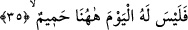

işâret etmektedir. Bu nedenle Peygamber Efendimiz (s.a.), “Cimrilik küfürdür, kâfir ise
cehennemdedir” [75] buyurmuşlardır. Âyette iki fiilin; yâni Allah’a inanmama fiili ile
yoksulu doyurmaya teşvik etmeme fiilinin özel olarak zikredilmesi, inkârın inanç
sahasında fiillerin en çirkini, cimriliğin de kötü ahlâk alanında hareketlerin en iğrenci
olduğundan dolayıdır. Âyette yapılan atıf, yoksulları mahrum bırakmanın, kâfirlerin
vasıfları olduğuna delâlet etmesi içindir. Nitekim bu hususa işâret etmek üzere başka bir
âyet-i kerîmede şöyle buyrulur: “Ortak koşanların vay hâline! Onlar zekatı
vermezler, âhireti inkâr edenler de onlardır.” (Fussilet, 41/6, 7)
Yukardaki ifâdeden kâfirlerin şerîatın furû ahkâm ile muhâtap oldukları anlamına
gelmez. Aynu’l-maânî isimli eserde deniyor ki: Bu âyetten dolayı İmam Şâfi kâfirlerin
furû ahkâm ile mükellef oldukları hükmünü çıkarmıştır. Oysa bu bizim mezhebimizce
doğru değildir. Çünkü herhangi bir kimsenin mükellef tutulması, bu konuda verilen
emirle mümkün olur. Oysa şerîatın furûu konusunda -kâfirlere yönelik- herhangi bir emri
yoktur. Üstelik tefsirini yaptığımız bu âyette önce îman daha sonra furû ahkâmdan birisi
zikrolunuyor. Bizim mezhebimiz de bu yöndedir.
İbn Şeyh der ki: Tefsirini yaptığımız bu âyet-i kerîme kâfirlerin furû ahkâm ile
mükellef kılındığına delildir. Kâfirler furû ahkâm ile şu anlamda mükelleftirler: Onlar
namaz kılmak, zekat vermek, çirkin hareketlerden ve yasaklardan vazgeçmek gibi furû
ahkâma sarılmadıkları için cezâlandırılacaklardır. Yoksa kendileri kâfir oldukları hâlde
kendilerinden bu fiilleri yapmaları isteniyor değildir. Çünkü kâfirler furû ahkâm ile bu
anlamda mükellef değillerdir. Çünkü onların fiil ehliyetleri yoktur. Fiil ehliyetinin
dayandığı temel odak noktası ise yapıldığında sevabı haketmektir. Oysa kâfirlerin
amellerine verilecek sevap yoktur. Kâfirde hak ehliyetinin bulunması, fiil ehliyetinin de
bulunmasını gerektirmez. Nitekim konu, usûl-i fıkıhta bu şekilde ifâde olunur.
Kısaca ifâde etmek gerekirse; kâfirler, furû ahkâm ile -cezâlandırılma açısından-
mükelleftirler, bunun dışında mükellef değildirler.
Rivâyet olunduğuna göre Ebu’d-Derdâ (r.a.) fakirleri düşündüğünden hanımını
çorbasını çoğaltması için teşvik ederdi ve: “Allah’a îman ederek zincirin yarısını
üzerimizden sıyırdık. Şimdi fakirleri yedirerek ve yedirmeyi teşvik ederek diğer
yarısını neden çıkarıp atmayalım?” derdi.
Koca bir belâyı bir arpa def ’eder
İşittim ki bir asâ Oc’u[76] öldürmüştür
Allah’ın mahlûkatına iyilik ulaştıran bir kimse
Her iki âlemde de iyilik görür.